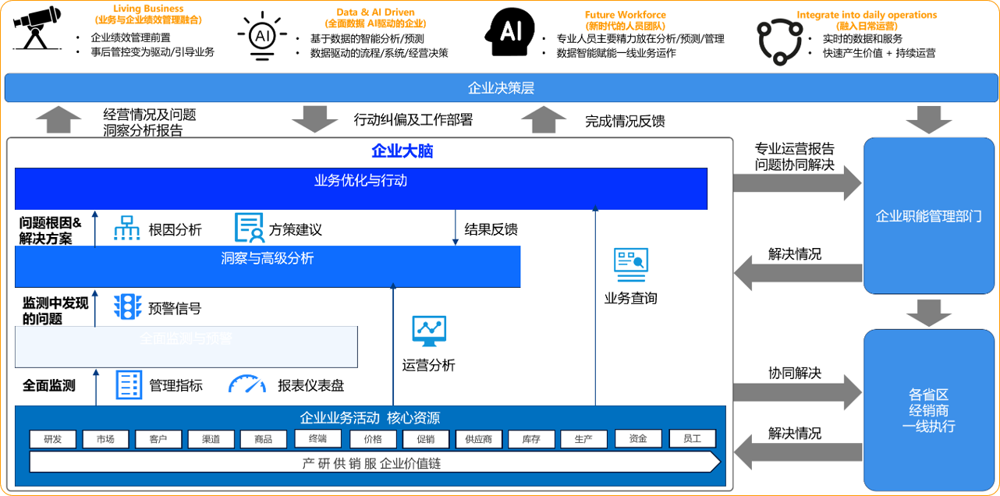
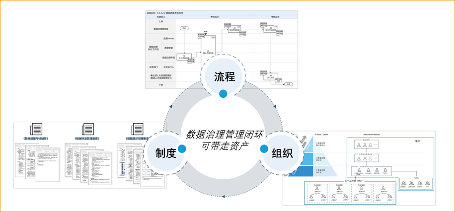
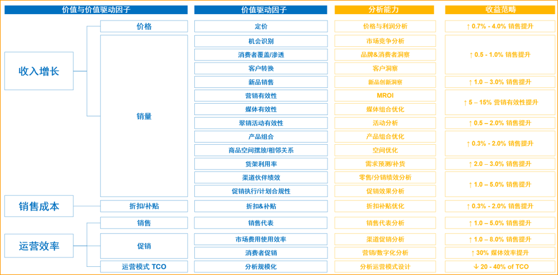

1-2天，把数据/AI从'争论'变成可立项的90天行动计划
1个可立项方案
+
1张90天路线图
4张A3画布
+
7个模板
第一周启动率
75%+
90天进展
60%+
多数企业卡住的不是算法，而是共识、机制、验收口径没对齐。
业务要增长、财务要回报、技术讲模型——缺统一"度量衡"。
试点能做，规模做不大：数据孤岛 + 权责不清，推进没抓手。
缺量化路径与验收指标，说不清"值不值"，预算难通过。
仅需 1-2 天共创工作坊，从"推不动"到带走一份可执行的落地资产清单
拆解标杆"样板间"（财务穿透、运营优化、场景实操），看清具体干什么、怎么干，对标自身定位阶段。
5维度评估，锁定3-5个最高回报场景，不再撒胡椒面。
工作坊共创，产出包含ROI的完整方案，可直接用于立项汇报。
90天分阶段计划，责任人、验收标准写死，不靠催靠机制。
带走可执行任务+工具包，下周即可启动。
通过4步互动，我们将为您推荐最适合的解决方案
选最让您头疼的那项，我们从这里开始拆解
（最多选2项）
高层对数据/AI的认知始终拉不齐
不知道该从哪个业务场景先切入
试点做了，但规模化始终推不动
算不清投入产出，预算批不下来
缺清晰的落地节奏，不知道先做什么、后做什么
团队能力跟不上，不知道怎么带队伍落地
基于您的选择：看清方向 + 高层认知拉不齐、算不清投入产出
帮您定位卡点、理清下一步该做什么


扫码添加微信，预约15分钟专属诊断
微信号：PallasAI_Huaming
完成后请点击下方确认按钮 ↓
您的专属诊断时间已锁定。在沟通前，建议您简单梳理以下信息，确保15分钟高效利用：
为了让我们的交流更高效，我们为您准备了一份《15分钟高管沟通筹备卡 (PDF)》。建议您在会前花 3 分钟扫一眼，它将帮助您快速厘清当前的业务卡点。
主理人曾于 埃森哲 / 德勤 / IBM 任职期间，主导推进以下标杆企业的业务转型与落地。


将顶级企业的试错经验，浓缩为可落地的框架与工具，转化为您团队可以直接复用的决策资产。
23年里我参与了几十个转型项目，发现多数失败不是技术问题，而是高层没有对齐认知、没有建立推进机制。这些案例里的经验和教训，现在都融入了我的工作坊。
李华明 Huaming Li · Pallas Studio 主理人
深陷高管层"巴别塔"：战略会上各部门拿着不同口径的BI报表相互推诿，同一指标存在多种算法。数据不仅未能赋能决策，反而放大部门内耗，会议难以形成共识与可执行结论，关键事项最终仍靠"直觉拍板"。
强制重塑战略会议流：把"争议"锁死在会前：引入"会前数据准入审核 + 会后执行监督"机制（口径不一致不上会、结论有人盯落实），终结会上扯皮。
统一高管层"度量衡"：一套KPI字典 + 一套分析框架：强制统一战略 KPI 字典，固化标准化分析框架（趋势/结构/对标），让管理层用"同一把尺子"看业务。
搭建数据支撑实体（DSC）：用机制替代人盯人：建立跨部门数据支撑中心，以制度化流转与交付承诺，替代原有"靠人找数/口头协调"的原始模式。

→ 企业核心指标逻辑树与字典（定义/口径/权责）
→ 数据支撑中心（DSC）架构模型（岗位/编制/协同）
→ 经营会议数据管控机制 SOP（会前/会中/会后）
跨部门流程断裂与标准缺失，使同一商品在全渠道系统中出现多个"分身"，财务月结与物流运输持续卡点。多品牌门店缺乏统一管控，缺货与积压并存，核心渠道与营采决策缺少可信口径，被迫依赖经验判断。
强行对齐高管认知：先统一"坐标系"：结构化共创打通业务/IT部门墙，重构主数据标准，建立全局唯一的"商品、门店、财务"主坐标。
设计业务红线与熔断机制：把脏数据挡在外面：明确质量底线与授权边界，输出拦截/熔断规则（不达标不入库、不入账、不入报表），防止回流污染。
攻克历史顽疾并固化协作机制：让成功可复制：锁定核心业务线专项攻坚，打通跨系统堵点；沉淀模板、例会节奏与责任链条，形成可复用执行样板。
这些成果在后续门店扩张中持续放大，证明了'先治数据底盘，再谈业务增长'的路径可行。

→ 跨部门共识工作坊 SOP（议程/角色/产出）
→ 主数据治理红线指南（底线/校验/熔断）
→ 高管级"责权利"矩阵（拍板/背责/执行）
深陷"ROI黑洞"与经验主义：渠道挖掘与市场费用投放高度依赖区域负责人直觉。管理层明知费用浪费严重，却缺少可量化的归因口径与测算模型，算不清真实产出比，导致各区域打法难以复制，规模化增长缺乏稳定抓手。
构建智能收入增长模型：穿透历史交易与门店数据，建立门店潜力预测与销售动因拆解模型，锁定可兑现的增量机会与优先战场。
洞察直驱一线行动（Kinetic Action）：拒绝"只看不用的报表"，将模型产出的策略直接转成一线拜访规划与定向执行工单，确保"洞察即行动"。
搭建业务执行控制塔（Control Tower）：实时监控前端执行进度与后链路转化效果，打通"预测-下发-追踪-反馈"闭环，让增长变成可控运营。

→ 智能收入增长归因模型画布（指标/动因/方法）
→ 业务直驱流转机制 SOP（洞察/派单/追踪）
→ 营销费用 ROI 测算沙盘（投入/产出/情景模拟）
不讲空泛理论。带入企业真实痛点，跨部门沙盘推演，现场拉齐高管认知，产出可落地闭环
将隐性经验，转化为可直接立项的显性抓手
包含财务/业务/战略三种叙事，把"ROI 黑洞"变成高管可用于申请预算的测算沙盘。
明确谁拍板、谁背责、谁执行，把"跨部门内耗"变成边界清晰的责权利机制/责任闭环。
不是讲故事，而是把别人验证过的选题逻辑、ROI口径、RACI机制拆出来，直接拿来用。
（含3条验证过的避坑路径+配套工具模板）
输出核心质量底线与拦截规则，把脏数据挡在决策流外，避免"边做边返工"。
60% 标杆解剖 + 40% 沙盘共创，彻底打破部门墙
开场即明确每位学员的具体产出与达标底线，绝不带着"听完就忘"的模糊感离开。
所有方案必须通过高层、业务、IT 视角的极致交叉质询（2天版专属），答辩通过方可结业立项。
核心产出： 锁定高价值 Top 场景 + 统一全局度量衡
核心产出： 算清投入产出比（输出三种 ROI 叙事模型）
核心产出： 制定跨部门 RACI 矩阵 + 数据质量红线与熔断规则
核心产出： 90天落地路线图 + 下周一即刻启动的每日行动清单
高管决策工作坊
管理者实战集训
（买的不仅是时间，更是立项方案的确定性与风险闭环）
💡 不确定选哪个？预约诊断 →
准备时间：30–60分钟 ｜ 我们提供填写模板 ｜ 无需整理大量材料
⚠ 以下准备是交付质量的前置条件——未达标可能影响现场产出效果。

在23年的咨询生涯里，我亲眼看到太多企业因为高层共识断裂、机制缺失、ROI说不清而让好项目半途而废。
这些用重金试错换来的经验，我现在浓缩成1–2天的实战工作坊，希望帮助更多企业少走弯路、真正落地。
🔒 所有展示样例均已脱敏处理，不含任何客户敏感数据与系统细节。
如需合规审查，可提前获取《信息安全说明》或签署NDA。
联系我们 →